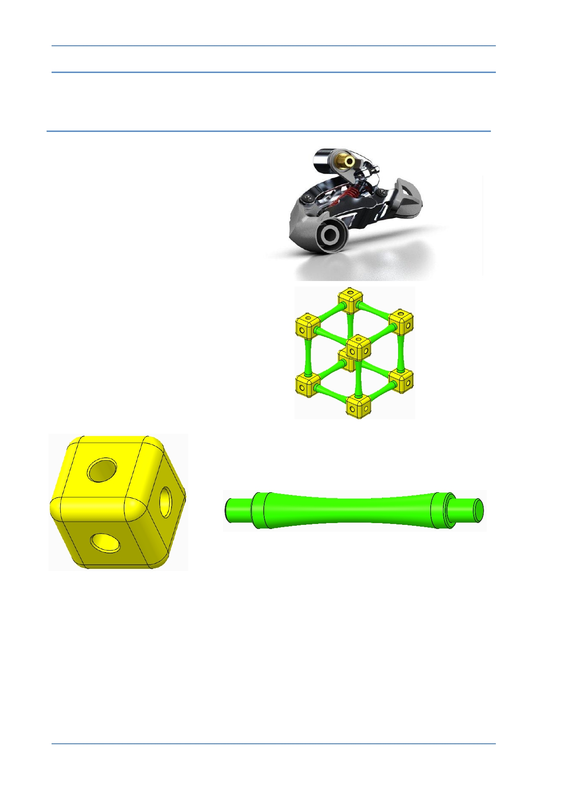

PTC Academic Program
Module 1
Introduction
This primer will introduce you to
the modeling, visualization and
design tools in Creo Parametric.
Creo Parametric is a leading 3D
design program, used by many
of the top product development
companies in the world.
You will be taught how to use
Creo Parametric to model two
components for a construction
kit - a cube and a strut.
You will then be shown how to
put these together to form an
assembly, create a photo-
realistic rendered image and an
engineering drawing.
© 2012 PTC
Creo Parametric 2.0 Primer
Page 5